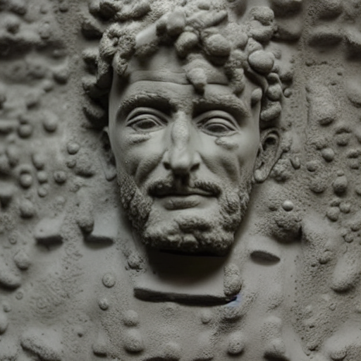
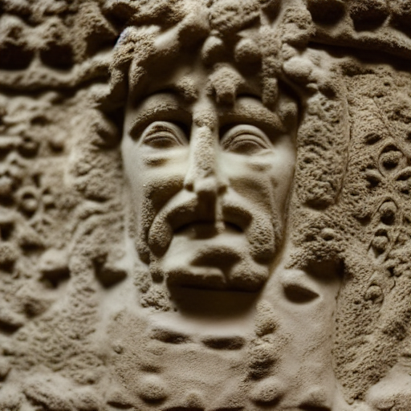
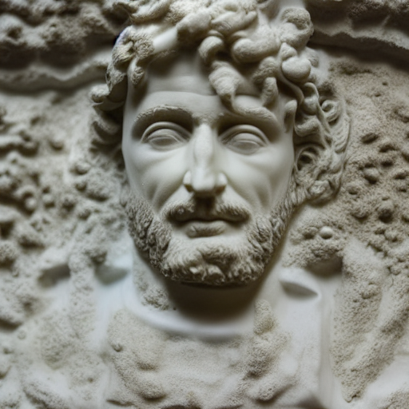
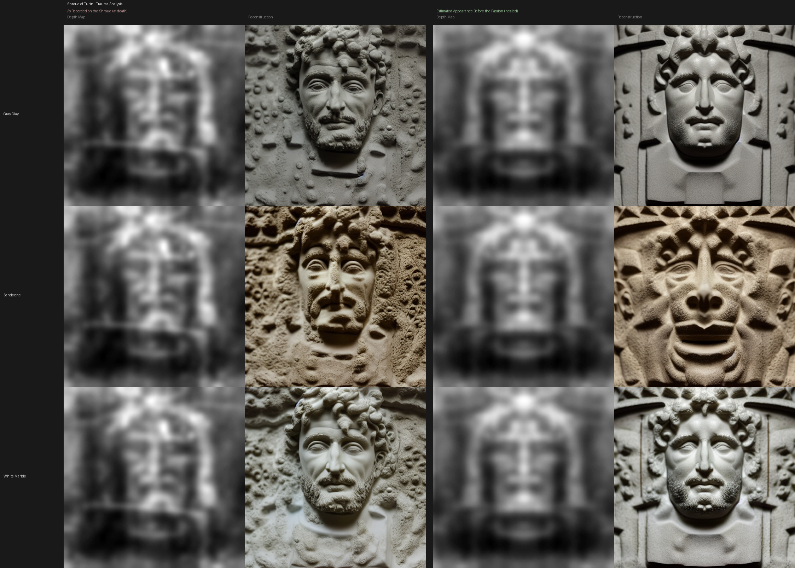
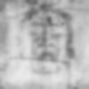
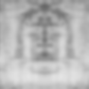

AI Reconstruction
Sculptural Reconstruction
Depth-constrained AI renders. The geometry is determined by the Shroud. The material is neutral. The face belongs to the data.
Why Sculptural Materials?
Photorealistic skin renders require choosing a skin tone — a parameter the Shroud's depth map cannot provide. Any skin tone choice would impose an assumption on the output. Sculptural materials (gray clay, sandstone, white marble) let the geometry speak without that bias.
The forensic anthropology constraints for pigmentation are documented separately below. They are not baked into these renders.
ControlNet Conditioning
Conditioning scale: 0.95 — near maximum. At this setting, the AI's facial structure is almost entirely determined by the depth map, not by its training data. The depth map is the face. The AI adds surface detail consistent with the chosen material.
Sculptural Comparison Grid
Three materials (gray clay, sandstone, white marble), four seeds each. Seed 44 was selected as the reference seed based on overall quality and depth adherence.

Individual Material Renders



Original vs. Healed Comparison
The healed reconstruction uses a bilaterally symmetrized depth map. Trauma-related asymmetry, swelling, and facial distortion effects are removed algorithmically. This is an analytical step — it separates the face geometry from the injury pattern, not a theological claim.
Left panels are labeled "As Recorded on the Shroud (at death)". Right panels are labeled "Estimated Appearance Before the Passion (healed)".



Anthropological Constraints
The depth map provides facial geometry. Pigmentation, hair texture, and eye color are not encoded in the Shroud's image. For completeness, the anthropological constraints for a first-century Levantine Jewish male are documented separately, drawing on:
- Richard Neave forensic reconstruction (2001 BBC "Son of God" documentary)
- Joan Taylor, What Did Jesus Look Like? (Bloomsbury, 2018)
- Ancient DNA studies: Haber et al. 2017, Agranat-Tamir et al. 2020
- First-century skeletal data (Qumran, Judean desert sites)
All sources converge on: olive-brown skin (Fitzpatrick IV–V), dark brown to black hair, brown eyes, short beard, lean muscular build consistent with outdoor manual labor.